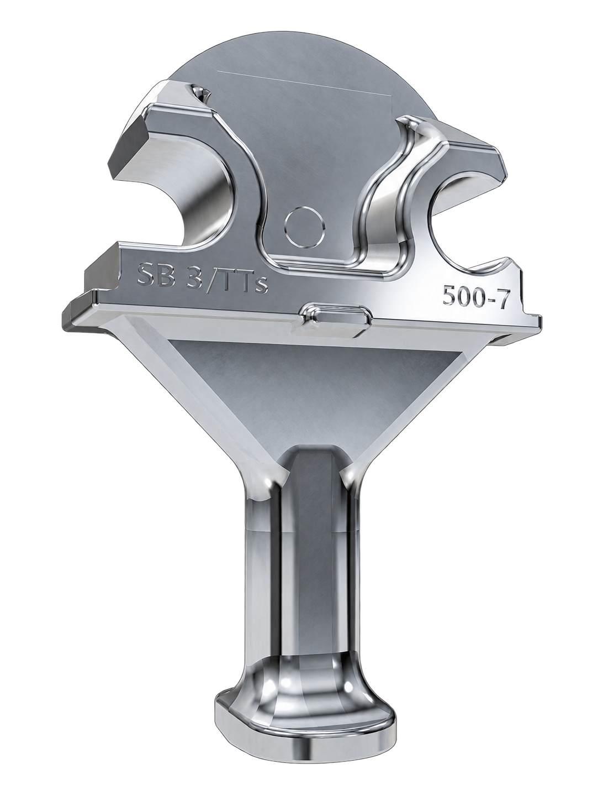
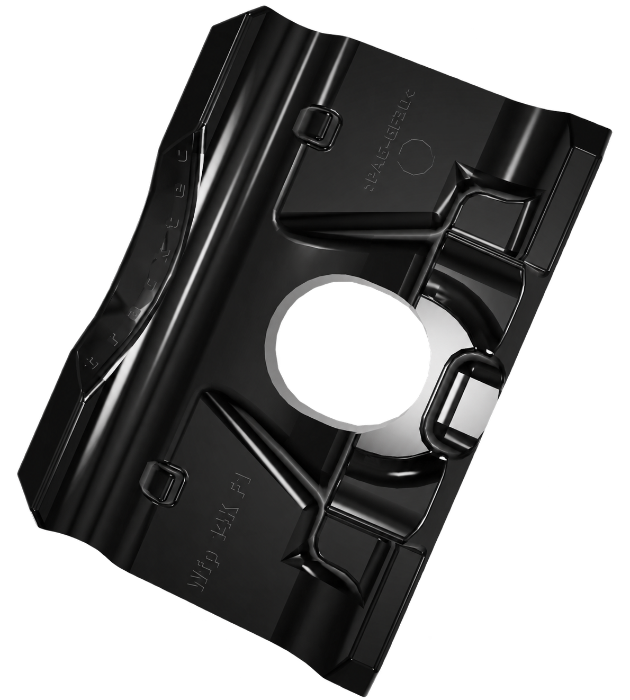

3D model not available
3D model not availableW14TT / WS7 / SKL14
Generic elastic rail fastening system for standard ballasted-track applications.
MarketCzech Republic, Slovakia
SystemCZ1
Rail profile49E1, 60E1
Mass5.8 kg
Width210 mm
Clamp force16 kN
3D model not availableGeneric elastic rail fastening system for standard ballasted-track applications.
3D model not availableGeneric reinforced rail fastening system intended for demanding main-line track conditions.
3D model not availableGeneric adjustable fastening system for urban and mixed-traffic railway infrastructure.
3D model not availableGeneric high-resilience fastening system for track sections requiring vibration reduction.
3D model not availableGeneric compact rail fastening for concrete sleepers and conventional railway track.
3D model not availableGeneric heavy-duty fastening system for railway track exposed to increased axle loads.
3D model not availableGeneric low-profile fastening system for slab track and constrained installation spaces.
3D model not availableGeneric insulated fastening system for standard railway and industrial track applications.
Standard elastic rail fastening for concrete sleepers on ballasted track, with electrical insulation and easy clip replacement.

View 3D modelHeight-adjustable fastening for ballastless track that compensates slab tolerances and damps vibration.

View 3D modelRail-in-elastomer fastening for grooved and Vignole rails, used on resilient and noise-sensitive track.